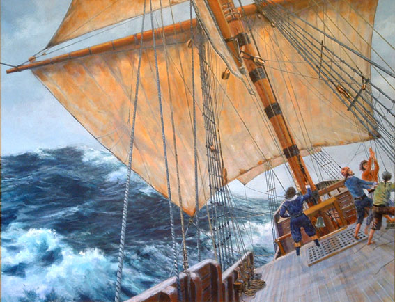

Introduction: Before they were Pilgrims
Many of these families were as much a part of the Nottinghamshire landscape and surrounding counties as the stone walls and the damp earth they farmed. These were people of the soil, and their world was defined by the rhythm of the seasons and the generational weight of the land. Many families had farmed the same patches of dirt for hundreds of years. Their identity was tied to the hearths their grandfathers had built and the specific chime of the parish bells that echoed across the North Country. Leaving wasn't just moving, it was like tearing up an ancient tree by its roots.
But that peaceful, ancestral life became a trap. Because they chose to worship in secret at William Brewster's manor house in Scrooby, they lived under a constant shadow. Every unexpected sound outside the manor would cause the room to go silent. They weren't just facing legal trouble, a conviction for religious nonconformity could bring fines, imprisonment, and economic ruin. For the leaders, the threat was even worse. It meant the notorious Clink Prison in London or even the very real possibility of the gallows.
The break finally happened under the cover of darkness on an autumn night in 1607. They turned their backs on their warm hearths and walked sixty miles toward the coast as shadows, carrying only what they could fit in their arms. When they reached Scotia Creek, the quiet life of the country was gone forever. They appear to have walked into a betrayal. The captain they had paid to help them had already sold them out to the local militia. They were stripped of their money and their books and paraded through the streets of Boston as prisoners. They had lost their land and their status, but their resolve was only beginning to be tested.
Prelude: The Physical Reality
Before the New World ever came into view, before ideals were tested or histories were written, there was only the ship, tight, dim, and unrelenting. We tend to picture the voyage of the Mayflower in broad strokes like a brave crossing, a determined people, or a vast ocean. What often gets missed is the world they actually lived in for those 66 days, a space so confined and cluttered that it shaped every breath, every movement, and every hour of the journey.
For a ship the size of the Mayflower, historians estimate the living space on the "tween deck" was roughly 80 feet by 20 feet, about 1,600 square feet in total. Into that space were packed 102 passengers, a few crew members, and even a couple of dogs. They shared quarters about the size of a modest three-bedroom apartment today, but even that comparison doesn't quite hold up. Barrels of provisions crowded the space and heavy sea chests served as chairs and tables. Thick oak beams broke up what little room there was, forcing people to feel their way around in near darkness. The ceiling was barely five feet high, so most adults spent the entire voyage bent over.
Chapter 1: The Radical Underground
In early Stuart England, open worship outside the established church could bring prosecution and punishment. A group of rebels in the village of Scrooby decided they couldn't stay. These weren't just casual believers, they were committed Separatists willing to risk punishment and loss for conscience' sake. By 1608, they fled to Leiden in Holland. For twelve years, they lived as refugees. Many took up demanding labor and trades in Leiden to support their families and watched their children grow up speaking Dutch and losing their English heritage. They realized that to survive as a people, they had to move again. This wasn't a trip for adventure, it was a flight for survival.
Chapter 2: The Two-Ship Disaster
The voyage wasn't supposed to begin as a desperate gamble. The plan called for two ships, the Mayflower and a smaller companion called the Speedwell. They set out in August of 1620 with cautious optimism, but almost immediately, trouble followed. The Speedwell began taking on water. They put in for repairs, tried again, and turned back once more. Each attempt drained time, money, and morale. By the time they limped back to Plymouth, it was clear the Speedwell wasn't going to make the Atlantic crossing. Families were split and some passengers gave up the journey entirely. The rest crowded aboard the Mayflower, which was now dangerously full. On September 16, 1620, they finally left England with a single crowded ship.
Chapter 3: Saints and Strangers
The passengers were a mix of two groups. The Saints were the religious Separatists, but the Strangers were the tradesmen and soldiers hired to help the colony survive. Among them were figures like John Alden and Myles Standish. The divide between them wasn't just about prayer, it was about how they understood authority and law. The Saints believed the Church of England was beyond saving and felt they had to separate from it entirely. They also believed they had entered into a covenant with God, which was the foundation of their whole community.
The Strangers were not necessarily irreligious, but they did not share the Saints' radical vision. Most were more conventional English subjects accustomed to a church governed by bishops and the Crown. Some feared the Saints might try to bind the entire company into a religious discipline they never agreed to. To prevent a mutiny, the men sat down on November 11 and signed the Mayflower Compact. This became a foundational civil agreement for Plymouth's government.
Chapter 4: Sixty-Six Days in the Dark

Halfway through the crossing, the voyage nearly failed. A violent storm struck with enough force to bow and crack one of the ship's main beams. For a time, even the veteran sailors feared it wouldn't hold together. But the passengers had brought a great iron screw with them, probably intended for housebuilding. In the middle of that chaos, they hauled it out and used it to crank the beam back into place. Bradford's account suggests that this improvised repair was one of those rare moments of luck and grit that allowed the voyage to continue.
The sea didn't threaten only the ship. During one of the worst storms, John Howland was swept overboard and into the Atlantic. He survived only because he managed to seize a trailing rope until the crew pulled him back aboard. It was a brief moment, but it captured the truth of the voyage, survival often hung by almost nothing.


Chapter 5: Land Ho! The Bitter Arrival
The first sight of land on November 9, 1620, was not a joyous occasion — it was a moment of sheer survival. They had reached shore at last, but not the shore they had planned for. Captain Jones tried to turn the ship south toward the Hudson River, but the attempt nearly ended in disaster. The Mayflower ran into the roaring breakers of Pollock Rip, which threatened to tear the hull open. Jones turned the ship back north to the relative safety of Cape Cod Bay.
The First Loss and Near Drowning
The danger did not end when the Mayflower found shelter in Provincetown Harbor. That truth became painfully clear with the death of Dorothy Bradford. While William Bradford was away with one of the exploring parties searching for a place to settle, Dorothy fell overboard from the anchored Mayflower and drowned in the freezing harbor. Her death cast a dark shadow over the arrival — after surviving the Atlantic crossing, a passenger could still die within sight of land.
Chapter 6: The Starving Time
They arrived too late in the season and sailed into a New England winter that had already turned harsh. The ground was frozen hard as stone and every delay cost them strength they didn't have to spare. So they stayed on the ship. The Mayflower became their only shelter. Illnesses consistent with scurvy, pneumonia, and gastrointestinal disease spread through the cramped quarters. At the lowest point, there were only six or seven people well enough to move between the sick. By the time spring broke, 52 of the 102 passengers were dead. More than half the colony had vanished in a single season.
Chapter 7: An Unlikely Alliance
The colony didn't survive on its own strength. It survived because of Tisquantum, known as Squanto, who showed the settlers how to survive in a land that wasn't theirs. He taught them to plant corn using fish as fertilizer and guided them to eel runs. He also served as the crucial link in negotiations with Massasoit, the leader of the Wampanoag Confederacy. By the autumn of 1621, the colony was no longer on the brink of collapse. They shared a three-day feast that would later be remembered as the first Thanksgiving.
Chapter 8: The Living Legacy
An Unbroken Chain to Alabama
FamilySearch, citing the General Society of Mayflower Descendants, says there may be as many as 35 million living descendants worldwide and about 10 million in the United States, or roughly 3 percent of the population using 2018 figures. Imagine three percent of the American population descending from a group so small they could fit on a modern city bus.
This legacy didn't stay in New England. It traveled with families as they moved south, seeking new land and new opportunities. Our own Alabama Society was founded in Birmingham on December 6, 1952, because the descendants here recognized that distance doesn't diminish heritage.
Whether one’s ancestor was a leader like Bradford or a servant such as John Howland or George Soule, their descendants are found across Alabama today. From the Tennessee Valley to the Gulf Coast, that lineage remains part of the state’s historical and family story.
Why We Research
We don't just track these names to fill out a chart. We do it to honor a group of people who stood on the edge of a vast wilderness and chose to build something together instead of giving up. Every time we help a new member prove their lineage, we're rescuing a piece of that 1620 story from being forgotten.
The Mayflower is still sailing. It sails through every descendant who values religious liberty and every Alabamian who honors the courage of their ancestors.
Sources and Historical Notes
Primary Historical Sources
Pilgrim Hall Museum, “Mayflower Passenger List” — A center for Pilgrim research and the foundational reference for those aboard the vessel.
pilgrimhall.org → Mayflower Passenger List
Pilgrim Hall Museum, “The Mayflower” — Covers the technical history of the ship and life aboard her during the crossing.
pilgrimhall.org → The Mayflower
MayflowerHistory.com, “Mayflower Passenger List” — A highly respected resource offering passenger-by-passenger context and historical links.
mayflowerhistory.com → Passenger List
Lineage and Genealogical Verification
General Society of Mayflower Descendants, Silver Books Project — The definitive source for documented Mayflower lineages and verified descendant data.
themayflowersociety.org → Silver Books Project
General Society of Mayflower Descendants, Guide to the Silver Books — A practical guide for researchers navigating the society’s primary publications.
themayflowersociety.org → Guide to the Silver Books
General Society of Mayflower Descendants, Passenger Profiles — Detailed biographies and family information for the original 102 passengers.
themayflowersociety.org → Passenger Profiles
Technical and Medical References
University of Exeter, “Mayflower II (Brixham, 1957)” — Because no original plans or measured drawings of the 1620 Mayflower survive, this reconstruction from the university’s Voyaging through History project is the key source for the ship’s dimensions used in this article.
humanities-research.exeter.ac.uk → Mayflower II
Cleveland Clinic, “Scurvy” — The medical reference defining the vitamin C deficiency that caused bleeding gums, failing joints, and death during the colony’s first winter.
my.clevelandclinic.org → Scurvy
Additional Family Profiles
The Hopkins Family Profile
themayflowersociety.org → The Hopkins Family
The Brewster Family Profile
themayflowersociety.org → The Brewster Family
Artwork
Paintings of the Mayflower depicted throughout this article are the work of Mike Haywood of Cornwall, United Kingdom. A painter of marine subjects, Mr. Haywood creates historically grounded works and accompanies them with his own scholarly articles. More of his paintings and writings can be found at his website: www.mikehaywoodart.co.uk
Meet the Passengers
Explore our narrative directory of the men, women, and children who made the voyage aboard the Mayflower in 1620.
Enter the Passenger Portal →